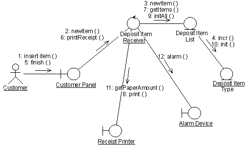

| Рекомендация: Диаграмма связи |
 |
|
| Связанные элементы |
|---|
Введение
Диаграмма связи демонстрирует, как взаимодействуют объекты, чтобы выполнить поведение конкретного варианта использования или его части. Вместе с диаграммами последовательности диаграммы связи применяются проектировщиками для определения и уточнения ролей объектов, выполняющих конкретный поток событий варианта использования. Это основной источник информации, применяемый для определения обязанностей и интерфейсов классов. В отличие от диаграммы последовательности, диаграмма связи показывает взаимосвязи между объектами. Диаграммы последовательности и диаграммы связи выражают схожую информацию, но по-разному. Диаграммы связи показывают взаимосвязи между объектами; они удобнее для понимания всех воздействий на заданный объект, а также для проектирования процедур. Из-за формата диаграмм связи они лучше подходят для задач анализа (см. раздел Задача: анализ варианта использования). А именно, они удобнее для изображения простых взаимодействий небольшого числа объектов. По мере роста числа объектов и сообщений диаграмма становится все более неудобочитаемой. Кроме того, все труднее становится отображать дополнительные описания, например информацию о времени, точки принятия решений и пр., которые легко добавлять в примечания в диаграмме последовательности. Содержимое диаграмм связиНа диаграммах связи могут быть показаны объекты и экземпляры субъектов вместе со ссылками и сообщениями, описывающими, как они взаимосвязаны и как они взаимодействуют. Диаграмма описывает, что происходит с участвующими объектами, на примере того, как они обмениваются сообщениями. Вы можете создать диаграмму связи для каждой ветви потока событий варианта использования.  Диаграмма связи, описывающая часть потока событий варианта использования Получить предмет в системе машины для переработки вторсырья. ОбъектыОбъект представляется символом объекта, в котором показаны имя объекта и его класс, выделенные подчеркиванием и разделенные двоеточием: имя_объекта : имя_класса Объекты можно использовать на диаграммах связи следующими способами:
СубъектыОбычно экземпляр субъекта присутствует на диаграмме связи в качестве инициатора взаимодействия. Если на диаграмме присутствует несколько экземпляров субъекта, рекомендуется разместить их на краю диаграммы. СсылкиСсылки определяются следующим образом:
СообщенияПосредством сообщений объекты обмениваются информацией. Сообщение передается с целью выполнить какое-либо действие. На диаграммах связи сообщение показано как помеченная стрелка рядом со ссылкой. Это означает, что ссылка применяется для передачи или какой-нибудь иной доставки сообщения целевому объекту. Стрелка указывает вдоль ссылки в направлении целевого объекта (т.е. объекта, принимающего сообщение). Стрелка помечена именем сообщения и его параметрами. Стрелка также может быть помечена порядковым номером сообщения в общем взаимодействии. Порядковые номера часто применяются на диаграммах связи, поскольку они являются единственным способом описания относительной последовательности сообщений. Сообщение может быть неприсвоенным, что означает, что его имя - это временная строка, описывающая общий смысл сообщения. Впоследствии сообщение можно будет присвоить, указав операцию его целевого объекта. В этом случае указанная операция заменит имя сообщения. |
© Copyright IBM Corp. 1987, 2006. Все права защищены.. |